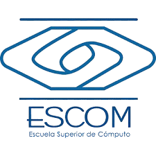
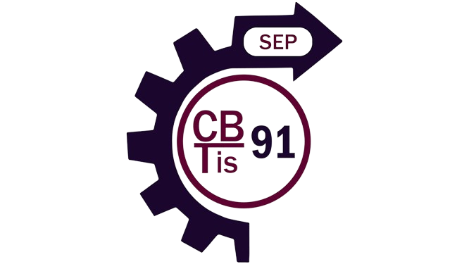

Formación académica
Actualmente, me encuentro en el sexto semestre de la carrera de Ingeniería en Sistemas en la Escuela Superior de Cómputo del Instituto Politécnico Nacional. El cambio de ambiente y la complejidad de los estudios han sido desafiantes, pero cada día que paso aquí reafirma mi pasión por la tecnología y me impulsa a seguir adelante.
NIVEL SUPERIOR

ESCUELA SUPERIOR DE CÓMPUTO
Ingeniería en sistemas computacionales
PERIODO: 2022 - Actualidad
NIVEL MEDIO SUPERIOR

CENTRO DE BACHILLERATO TECNOLÓGICO INSDUSTRIAL Y DE SERVICIOS NO. 91
Técnico en programación
PERIODO: 2018 - 2021